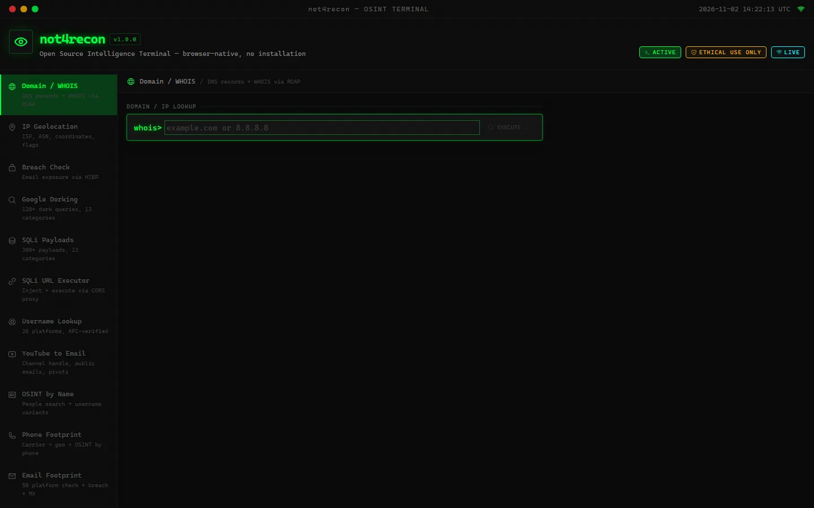

not4recon
Terminal OSINT yang jalan langsung di browser.
Satu tempat untuk mengumpulkan informasi publik tentang domain, IP, email, username, sampai nomor telepon. Tanpa instal apa pun.
Dibuat untuk riset dan pengujian yang sudah mendapat izin.
Next.jsTailwind CSS
Infrastruktur
- Domain dan WHOIS via RDAP
- Geolokasi IP, ISP, ASN
Orang dan akun
- Cari username di 26 platform
- Jejak email di 50 platform
- Cek kebocoran email lewat HIBP
- OSINT dari nama
- Jejak nomor telepon
- YouTube ke email
Pengujian web
- Google dorking, 120+ query
- Kumpulan payload SQLi
- SQLi URL executor